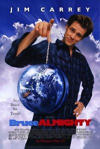

Viva - A vida é uma festa

Viva - A Vida é uma Festa, é um filme musical de animação computadorizada norte-americano de 2017, produzido pela Pixar Animation Studios e distribuído pela Walt Disney Studios Motion Pictures. Baseado em uma ideia original de Lee Unkrich, o longa-metragem animado é dirigido por Unkrich e codirigido por Adrian Molina. A história é sobre um garoto de 12 anos chamado Miguel Rivera que acidentalmente é transportado para o mundo dos mortos, onde procura pela ajuda de seu tataravô músico para que ele o leve de volta para a sua família no mundo dos vivos.
Em ritmo de fuga
Em Ritmo de Fuga, é um filme britano-estadunidense de 2017, dos gêneros ação, comédia, policial e suspense, escrito e dirigido por Edgar Wright e estrelado por Ansel Elgort, Kevin Spacey, Lily James, Jon Bernthal, Eiza González, Jon Hamm e Jamie Foxx. O filme acompanha Baby, um jovem motorista em fuga que decide trocar sua vida de crime pela garota de seus sonhos.
Amor e monstros
Amor e monstros, é um filme de comédia romântica e ação pós-apocalíptica dirigido por Michael Matthews, e produzido por Shawn Levy e Dan Cohen. O filme é estrelado por Dylan O'Brien, Michael Rooker, Ariana Greenblatt e Jessica Henwick.
Homem-Aranha: De Volta ao Lar
Homem-Aranha: De Volta ao Lar, é um filme estadunidense de super-herói de 2017, baseado no personagem Homem-Aranha da Marvel Comics, coproduzido pela Columbia Pictures e Marvel Studios e distribuído pela Sony Pictures Releasing. É o segundo reboot do Homem-Aranha no cinema e o décimo sexto filme do Universo Cinematográfico Marvel. O filme é dirigido por Jon Watts, com um roteiro de Jonathan Goldstein e John Francis Daley, Watts e Christopher Ford, e Chris McKenna e Erik Sommers. O elenco é composto por Tom Holland, Michael Keaton, Jon Favreau, Zendaya, Donald Glover, Jacob Batalon, Laura Harrier, Tony Revolori, Bokeem Woodbine, Tyne Daly, Marisa Tomei e Robert Downey Jr. Em Spider-Man: Homecoming, Peter Parker tenta equilibrar o herói Homem-Aranha com sua vida escolar enquanto ele enfrenta o Abutre.
Click
Click, é um filme estadunidense de comédia dramática, fantasia e ficção científica de 2006, dirigido por Frank Coraci, escrito por Steve Koren e Mark O'Keefe, e produzido por Adam Sandler, que também atuou no papel principal. O filme é co-estrelado por Kate Beckinsale e Christopher Walken. O filme foi lançado nos Estados Unidos em 23 de junho de 2006. Foi distribuído pela Columbia/Sony Pictures. Sandler interpreta um arquiteto com excesso de trabalho que negligencia sua família. Quando ele adquire um controle remoto universal que lhe permite "avançar" através de partes desagradáveis ou totalmente sem graça de sua vida, ele logo descobre que aqueles aparentemente maus bocados continham partes vitais de lições da vida.
Todo Poderoso
Todo Poderoso, é um filme de comédia e fantasia estadunidense de 2003, dirigido por Tom Shadyac e escrito por Steve Koren, Mark O'Keefe e Steve Oedekerk. O filme é estrelado por Jim Carrey como Bruce Nolan, um repórter de TV que questiona a Deus, interpretado por Morgan Freeman, por não estar fazendo seu trabalho corretamente e este oferece a chance de tentar ser o próprio Deus por uma semana; é co-estrelado por Jennifer Aniston, Lisa Ann Walter, Philip Baker Hall e Steve Carell. O filme é a terceira colaboração conjunta de Shadyac e Carrey, tendo trabalhado juntos anteriormente em Ace Ventura: Pet Detective em 1994 e Liar Liar em 1997.